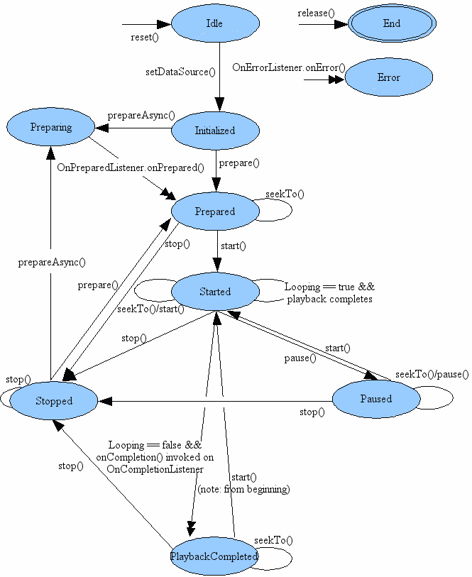

| java.lang.Object | |
| ↳ | android.media.MediaPlayer |
MediaPlayer class can be used to control playback
of audio/video files and streams. An example on how to use the methods in
this class can be found in VideoView.
Topics covered here are:
For more information about how to use MediaPlayer, read the Media Playback developer guide.
Playback control of audio/video files and streams is managed as a state machine. The following diagram shows the life cycle and the states of a MediaPlayer object driven by the supported playback control operations. The ovals represent the states a MediaPlayer object may reside in. The arcs represent the playback control operations that drive the object state transition. There are two types of arcs. The arcs with a single arrow head represent synchronous method calls, while those with a double arrow head represent asynchronous method calls.

From this state diagram, one can see that a MediaPlayer object has the following states:
new or
after reset() is called, it is in the Idle state; and after
release() is called, it is in the End state. Between these
two states is the life cycle of the MediaPlayer object.
reset()
is called. It is a programming error to invoke methods such
as getCurrentPosition(),
getDuration(), getVideoHeight(),
getVideoWidth(), setAudioStreamType(int),
setLooping(boolean),
setVolume(float, float), pause(), start(),
stop(), seekTo(int), prepare() or
prepareAsync() in the Idle state for both cases. If any of these
methods is called right after a MediaPlayer object is constructed,
the user supplied callback method OnErrorListener.onError() won't be
called by the internal player engine and the object state remains
unchanged; but if these methods are called right after reset(),
the user supplied callback method OnErrorListener.onError() will be
invoked by the internal player engine and the object will be
transfered to the Error state. release() immediately
so that resources used by the internal player engine associated with the
MediaPlayer object can be released immediately. Resource may include
singleton resources such as hardware acceleration components and
failure to call release() may cause subsequent instances of
MediaPlayer objects to fallback to software implementations or fail
altogether. Once the MediaPlayer
object is in the End state, it can no longer be used and
there is no way to bring it back to any other state. new is in the
Idle state, while those created with one
of the overloaded convenient create methods are NOT
in the Idle state. In fact, the objects are in the Prepared
state if the creation using create method is successful.
setOnErrorListener(android.media.MediaPlayer.OnErrorListener).
reset() can be called to restore the object to its Idle
state.prepare(),
prepareAsync(), or one of the overloaded setDataSource
methods in an invalid state. setDataSource(FileDescriptor), or
setDataSource(String), or
setDataSource(Context, Uri), or
setDataSource(FileDescriptor, long, long) transfers a
MediaPlayer object in the Idle state to the
Initialized state.
IllegalArgumentException
and IOException that may be thrown from the overloaded
setDataSource methods.prepare() (synchronous) which
transfers the object to the Prepared state once the method call
returns, or a call to prepareAsync() (asynchronous) which
first transfers the object to the Preparing state after the
call returns (which occurs almost right way) while the internal
player engine continues working on the rest of preparation work
until the preparation work completes. When the preparation completes or when prepare() call returns,
the internal player engine then calls a user supplied callback method,
onPrepared() of the OnPreparedListener interface, if an
OnPreparedListener is registered beforehand via setOnPreparedListener(android.media.MediaPlayer.OnPreparedListener).prepare() or prepareAsync() is called in
any other state.start() must be called. After
start() returns successfully, the MediaPlayer object is in the
Started state. isPlaying() can be called to test
whether the MediaPlayer object is in the Started state.
setOnBufferingUpdateListener(OnBufferingUpdateListener).
This callback allows applications to keep track of the buffering status
while streaming audio/video.start() has not effect
on a MediaPlayer object that is already in the Started state.pause(). When the call to
pause() returns, the MediaPlayer object enters the
Paused state. Note that the transition from the Started
state to the Paused state and vice versa happens
asynchronously in the player engine. It may take some time before
the state is updated in calls to isPlaying(), and it can be
a number of seconds in the case of streamed content.
start() to resume playback for a paused
MediaPlayer object, and the resumed playback
position is the same as where it was paused. When the call to
start() returns, the paused MediaPlayer object goes back to
the Started state.pause() has no effect on
a MediaPlayer object that is already in the Paused state.stop() stops playback and causes a
MediaPlayer in the Started, Paused, Prepared
or PlaybackCompleted state to enter the
Stopped state.
prepare() or prepareAsync() are called to set
the MediaPlayer object to the Prepared state again.stop() has no effect on a MediaPlayer
object that is already in the Stopped state.seekTo(int).
seekTo(int)
call returns right way, the actual seek operation may take a while to
finish, especially for audio/video being streamed. When the actual
seek operation completes, the internal player engine calls a user
supplied OnSeekComplete.onSeekComplete() if an OnSeekCompleteListener
has been registered beforehand via
setOnSeekCompleteListener(OnSeekCompleteListener).seekTo(int) can also be called in the other states,
such as Prepared, Paused and PlaybackCompleted
state.getCurrentPosition(), which
is helpful for applications such as a Music player that need to keep
track of the playback progress.setLooping(boolean), the MediaPlayer object shall remain in
the Started state.setOnCompletionListener(OnCompletionListener).
The invoke of the callback signals that the object is now in the
PlaybackCompleted state.start() can restart the playback from the
beginning of the audio/video source.| Method Name | Valid Sates | Invalid States | Comments |
| attachAuxEffect | {Initialized, Prepared, Started, Paused, Stopped, PlaybackCompleted} | {Idle, Error} | This method must be called after setDataSource. Calling it does not change the object state. |
| getAudioSessionId | any | {} | This method can be called in any state and calling it does not change the object state. |
| getCurrentPosition | {Idle, Initialized, Prepared, Started, Paused, Stopped, PlaybackCompleted} | {Error} | Successful invoke of this method in a valid state does not change the state. Calling this method in an invalid state transfers the object to the Error state. |
| getDuration | {Prepared, Started, Paused, Stopped, PlaybackCompleted} | {Idle, Initialized, Error} | Successful invoke of this method in a valid state does not change the state. Calling this method in an invalid state transfers the object to the Error state. |
| getVideoHeight | {Idle, Initialized, Prepared, Started, Paused, Stopped, PlaybackCompleted} | {Error} | Successful invoke of this method in a valid state does not change the state. Calling this method in an invalid state transfers the object to the Error state. |
| getVideoWidth | {Idle, Initialized, Prepared, Started, Paused, Stopped, PlaybackCompleted} | {Error} | Successful invoke of this method in a valid state does not change the state. Calling this method in an invalid state transfers the object to the Error state. |
| isPlaying | {Idle, Initialized, Prepared, Started, Paused, Stopped, PlaybackCompleted} | {Error} | Successful invoke of this method in a valid state does not change the state. Calling this method in an invalid state transfers the object to the Error state. |
| pause | {Started, Paused, PlaybackCompleted} | {Idle, Initialized, Prepared, Stopped, Error} | Successful invoke of this method in a valid state transfers the object to the Paused state. Calling this method in an invalid state transfers the object to the Error state. |
| prepare | {Initialized, Stopped} | {Idle, Prepared, Started, Paused, PlaybackCompleted, Error} | Successful invoke of this method in a valid state transfers the object to the Prepared state. Calling this method in an invalid state throws an IllegalStateException. |
| prepareAsync | {Initialized, Stopped} | {Idle, Prepared, Started, Paused, PlaybackCompleted, Error} | Successful invoke of this method in a valid state transfers the object to the Preparing state. Calling this method in an invalid state throws an IllegalStateException. |
| release | any | {} | After release(), the object is no longer available. |
| reset | {Idle, Initialized, Prepared, Started, Paused, Stopped, PlaybackCompleted, Error} | {} | After reset(), the object is like being just created. |
| seekTo | {Prepared, Started, Paused, PlaybackCompleted} | {Idle, Initialized, Stopped, Error} | Successful invoke of this method in a valid state does not change the state. Calling this method in an invalid state transfers the object to the Error state. |
| setAudioSessionId | {Idle} | {Initialized, Prepared, Started, Paused, Stopped, PlaybackCompleted, Error} | This method must be called in idle state as the audio session ID must be known before calling setDataSource. Calling it does not change the object state. |
| setAudioStreamType | {Idle, Initialized, Stopped, Prepared, Started, Paused, PlaybackCompleted} | {Error} | Successful invoke of this method does not change the state. In order for the target audio stream type to become effective, this method must be called before prepare() or prepareAsync(). |
| setAuxEffectSendLevel | any | {} | Calling this method does not change the object state. |
| setDataSource | {Idle} | {Initialized, Prepared, Started, Paused, Stopped, PlaybackCompleted, Error} | Successful invoke of this method in a valid state transfers the object to the Initialized state. Calling this method in an invalid state throws an IllegalStateException. |
| setDisplay | any | {} | This method can be called in any state and calling it does not change the object state. |
| setSurface | any | {} | This method can be called in any state and calling it does not change the object state. |
| setVideoScalingMode | {Initialized, Prepared, Started, Paused, Stopped, PlaybackCompleted} | {Idle, Error} | Successful invoke of this method does not change the state. |
| setLooping | {Idle, Initialized, Stopped, Prepared, Started, Paused, PlaybackCompleted} | {Error} | Successful invoke of this method in a valid state does not change the state. Calling this method in an invalid state transfers the object to the Error state. |
| isLooping | any | {} | This method can be called in any state and calling it does not change the object state. |
| setOnBufferingUpdateListener | any | {} | This method can be called in any state and calling it does not change the object state. |
| setOnCompletionListener | any | {} | This method can be called in any state and calling it does not change the object state. |
| setOnErrorListener | any | {} | This method can be called in any state and calling it does not change the object state. |
| setOnPreparedListener | any | {} | This method can be called in any state and calling it does not change the object state. |
| setOnSeekCompleteListener | any | {} | This method can be called in any state and calling it does not change the object state. |
| setScreenOnWhilePlaying | any | {} | This method can be called in any state and calling it does not change the object state. |
| setVolume | {Idle, Initialized, Stopped, Prepared, Started, Paused, PlaybackCompleted} | {Error} | Successful invoke of this method does not change the state. |
| setWakeMode | any | {} | This method can be called in any state and calling it does not change the object state. |
| start | {Prepared, Started, Paused, PlaybackCompleted} | {Idle, Initialized, Stopped, Error} | Successful invoke of this method in a valid state transfers the object to the Started state. Calling this method in an invalid state transfers the object to the Error state. |
| stop | {Prepared, Started, Stopped, Paused, PlaybackCompleted} | {Idle, Initialized, Error} | Successful invoke of this method in a valid state transfers the object to the Stopped state. Calling this method in an invalid state transfers the object to the Error state. |
| getTrackInfo | {Prepared, Started, Stopped, Paused, PlaybackCompleted} | {Idle, Initialized, Error} | Successful invoke of this method does not change the state. |
| addTimedTextSource | {Prepared, Started, Stopped, Paused, PlaybackCompleted} | {Idle, Initialized, Error} | Successful invoke of this method does not change the state. |
| selectTrack | {Prepared, Started, Stopped, Paused, PlaybackCompleted} | {Idle, Initialized, Error} | Successful invoke of this method does not change the state. |
| deselectTrack | {Prepared, Started, Stopped, Paused, PlaybackCompleted} | {Idle, Initialized, Error} | Successful invoke of this method does not change the state. |
One may need to declare a corresponding WAKE_LOCK permission <uses-permission>
element.
This class requires the INTERNET permission
when used with network-based content.
Applications may want to register for informational and error
events in order to be informed of some internal state update and
possible runtime errors during playback or streaming. Registration for
these events is done by properly setting the appropriate listeners (via calls
to
setOnPreparedListener(OnPreparedListener)setOnPreparedListener,
setOnVideoSizeChangedListener(OnVideoSizeChangedListener)setOnVideoSizeChangedListener,
setOnSeekCompleteListener(OnSeekCompleteListener)setOnSeekCompleteListener,
setOnCompletionListener(OnCompletionListener)setOnCompletionListener,
setOnBufferingUpdateListener(OnBufferingUpdateListener)setOnBufferingUpdateListener,
setOnInfoListener(OnInfoListener)setOnInfoListener,
setOnErrorListener(OnErrorListener)setOnErrorListener, etc).
In order to receive the respective callback
associated with these listeners, applications are required to create
MediaPlayer objects on a thread with its own Looper running (main UI
thread by default has a Looper running).
| Nested Classes | |||||||||||
|---|---|---|---|---|---|---|---|---|---|---|---|
| MediaPlayer.OnBufferingUpdateListener | Interface definition of a callback to be invoked indicating buffering status of a media resource being streamed over the network. | ||||||||||
| MediaPlayer.OnCompletionListener | Interface definition for a callback to be invoked when playback of a media source has completed. | ||||||||||
| MediaPlayer.OnErrorListener | Interface definition of a callback to be invoked when there has been an error during an asynchronous operation (other errors will throw exceptions at method call time). | ||||||||||
| MediaPlayer.OnInfoListener | Interface definition of a callback to be invoked to communicate some info and/or warning about the media or its playback. | ||||||||||
| MediaPlayer.OnPreparedListener | Interface definition for a callback to be invoked when the media source is ready for playback. | ||||||||||
| MediaPlayer.OnSeekCompleteListener | Interface definition of a callback to be invoked indicating the completion of a seek operation. | ||||||||||
| MediaPlayer.OnTimedTextListener | Interface definition of a callback to be invoked when a timed text is available for display. | ||||||||||
| MediaPlayer.OnVideoSizeChangedListener | Interface definition of a callback to be invoked when the video size is first known or updated | ||||||||||
| MediaPlayer.TrackInfo | Class for MediaPlayer to return each audio/video/subtitle track's metadata. | ||||||||||
| Constants | |||||||||||
|---|---|---|---|---|---|---|---|---|---|---|---|
| int | MEDIA_ERROR_IO | File or network related operation errors. | |||||||||
| int | MEDIA_ERROR_MALFORMED | Bitstream is not conforming to the related coding standard or file spec. | |||||||||
| int | MEDIA_ERROR_NOT_VALID_FOR_PROGRESSIVE_PLAYBACK | The video is streamed and its container is not valid for progressive playback i.e the video's index (e.g moov atom) is not at the start of the file. | |||||||||
| int | MEDIA_ERROR_SERVER_DIED | Media server died. | |||||||||
| int | MEDIA_ERROR_TIMED_OUT | Some operation takes too long to complete, usually more than 3-5 seconds. | |||||||||
| int | MEDIA_ERROR_UNKNOWN | Unspecified media player error. | |||||||||
| int | MEDIA_ERROR_UNSUPPORTED | Bitstream is conforming to the related coding standard or file spec, but the media framework does not support the feature. | |||||||||
| int | MEDIA_INFO_BAD_INTERLEAVING | Bad interleaving means that a media has been improperly interleaved or not interleaved at all, e.g has all the video samples first then all the audio ones. | |||||||||
| int | MEDIA_INFO_BUFFERING_END | MediaPlayer is resuming playback after filling buffers. | |||||||||
| int | MEDIA_INFO_BUFFERING_START | MediaPlayer is temporarily pausing playback internally in order to buffer more data. | |||||||||
| int | MEDIA_INFO_METADATA_UPDATE | A new set of metadata is available. | |||||||||
| int | MEDIA_INFO_NOT_SEEKABLE | The media cannot be seeked (e.g live stream) | |||||||||
| int | MEDIA_INFO_SUBTITLE_TIMED_OUT | Reading the subtitle track takes too long. | |||||||||
| int | MEDIA_INFO_UNKNOWN | Unspecified media player info. | |||||||||
| int | MEDIA_INFO_UNSUPPORTED_SUBTITLE | Subtitle track was not supported by the media framework. | |||||||||
| int | MEDIA_INFO_VIDEO_RENDERING_START | The player just pushed the very first video frame for rendering. | |||||||||
| int | MEDIA_INFO_VIDEO_TRACK_LAGGING | The video is too complex for the decoder: it can't decode frames fast enough. | |||||||||
| String | MEDIA_MIMETYPE_TEXT_SUBRIP | MIME type for SubRip (SRT) container. | |||||||||
| int | VIDEO_SCALING_MODE_SCALE_TO_FIT | Specifies a video scaling mode. | |||||||||
| int | VIDEO_SCALING_MODE_SCALE_TO_FIT_WITH_CROPPING | Specifies a video scaling mode. | |||||||||
| Public Constructors | |||||||||||
|---|---|---|---|---|---|---|---|---|---|---|---|
Default constructor.
| |||||||||||
| Public Methods | |||||||||||
|---|---|---|---|---|---|---|---|---|---|---|---|
Adds an external timed text source file (Uri).
| |||||||||||
Adds an external timed text source file.
| |||||||||||
Adds an external timed text file (FileDescriptor).
| |||||||||||
Adds an external timed text source file (FileDescriptor).
| |||||||||||
Attaches an auxiliary effect to the player.
| |||||||||||
Convenience method to create a MediaPlayer for a given Uri.
| |||||||||||
Convenience method to create a MediaPlayer for a given resource id.
| |||||||||||
Convenience method to create a MediaPlayer for a given Uri.
| |||||||||||
Deselect a track.
| |||||||||||
Returns the audio session ID.
| |||||||||||
Gets the current playback position.
| |||||||||||
Gets the duration of the file.
| |||||||||||
Returns an array of track information.
| |||||||||||
Returns the height of the video.
| |||||||||||
Returns the width of the video.
| |||||||||||
Checks whether the MediaPlayer is looping or non-looping.
| |||||||||||
Checks whether the MediaPlayer is playing.
| |||||||||||
Pauses playback.
| |||||||||||
Prepares the player for playback, synchronously.
| |||||||||||
Prepares the player for playback, asynchronously.
| |||||||||||
Releases resources associated with this MediaPlayer object.
| |||||||||||
Resets the MediaPlayer to its uninitialized state.
| |||||||||||
Seeks to specified time position.
| |||||||||||
Selects a track.
| |||||||||||
Sets the audio session ID.
| |||||||||||
Sets the audio stream type for this MediaPlayer.
| |||||||||||
Sets the send level of the player to the attached auxiliary effect
.
| |||||||||||
Sets the data source (file-path or http/rtsp URL) to use.
| |||||||||||
Sets the data source as a content Uri.
| |||||||||||
Sets the data source as a content Uri.
| |||||||||||
Sets the data source (FileDescriptor) to use.
| |||||||||||
Sets the data source (FileDescriptor) to use.
| |||||||||||
Sets the
SurfaceHolder to use for displaying the video
portion of the media. | |||||||||||
Sets the player to be looping or non-looping.
| |||||||||||
Set the MediaPlayer to start when this MediaPlayer finishes playback
(i.e.
| |||||||||||
Register a callback to be invoked when the status of a network
stream's buffer has changed.
| |||||||||||
Register a callback to be invoked when the end of a media source
has been reached during playback.
| |||||||||||
Register a callback to be invoked when an error has happened
during an asynchronous operation.
| |||||||||||
Register a callback to be invoked when an info/warning is available.
| |||||||||||
Register a callback to be invoked when the media source is ready
for playback.
| |||||||||||
Register a callback to be invoked when a seek operation has been
completed.
| |||||||||||
Register a callback to be invoked when a timed text is available
for display.
| |||||||||||
Register a callback to be invoked when the video size is
known or updated.
| |||||||||||
Control whether we should use the attached SurfaceHolder to keep the
screen on while video playback is occurring.
| |||||||||||
Sets the
Surface to be used as the sink for the video portion of
the media. | |||||||||||
Sets video scaling mode.
| |||||||||||
Sets the volume on this player.
| |||||||||||
Set the low-level power management behavior for this MediaPlayer.
| |||||||||||
Starts or resumes playback.
| |||||||||||
Stops playback after playback has been stopped or paused.
| |||||||||||
| Protected Methods | |||||||||||
|---|---|---|---|---|---|---|---|---|---|---|---|
Invoked when the garbage collector has detected that this instance is no longer reachable.
| |||||||||||
|
[Expand]
Inherited Methods | |||||||||||
|---|---|---|---|---|---|---|---|---|---|---|---|
 From class
java.lang.Object
From class
java.lang.Object
| |||||||||||
File or network related operation errors.
Bitstream is not conforming to the related coding standard or file spec.
The video is streamed and its container is not valid for progressive playback i.e the video's index (e.g moov atom) is not at the start of the file.
Media server died. In this case, the application must release the MediaPlayer object and instantiate a new one.
Some operation takes too long to complete, usually more than 3-5 seconds.
Bitstream is conforming to the related coding standard or file spec, but the media framework does not support the feature.
Bad interleaving means that a media has been improperly interleaved or not interleaved at all, e.g has all the video samples first then all the audio ones. Video is playing but a lot of disk seeks may be happening.
MediaPlayer is resuming playback after filling buffers.
MediaPlayer is temporarily pausing playback internally in order to buffer more data.
A new set of metadata is available.
The media cannot be seeked (e.g live stream)
Reading the subtitle track takes too long.
Subtitle track was not supported by the media framework.
The player just pushed the very first video frame for rendering.
The video is too complex for the decoder: it can't decode frames fast enough. Possibly only the audio plays fine at this stage.
MIME type for SubRip (SRT) container. Used in addTimedTextSource APIs.
Specifies a video scaling mode. The content is stretched to the
surface rendering area. When the surface has the same aspect ratio
as the content, the aspect ratio of the content is maintained;
otherwise, the aspect ratio of the content is not maintained when video
is being rendered. Unlike VIDEO_SCALING_MODE_SCALE_TO_FIT_WITH_CROPPING,
there is no content cropping with this video scaling mode.
Specifies a video scaling mode. The content is scaled, maintaining its aspect ratio. The whole surface area is always used. When the aspect ratio of the content is the same as the surface, no content is cropped; otherwise, content is cropped to fit the surface.
Default constructor. Consider using one of the create() methods for synchronously instantiating a MediaPlayer from a Uri or resource.
When done with the MediaPlayer, you should call release(),
to free the resources. If not released, too many MediaPlayer instances may
result in an exception.
Adds an external timed text source file (Uri).
Currently supported format is SubRip with the file extension .srt, case insensitive.
Note that a single external timed text source may contain multiple tracks in it.
One can find the total number of available tracks using getTrackInfo() to see what
additional tracks become available after this method call.
| context | the Context to use when resolving the Uri |
|---|---|
| uri | the Content URI of the data you want to play |
| mimeType | The mime type of the file. Must be one of the mime types listed above. |
| IOException | if the file cannot be accessed or is corrupted. |
|---|---|
| IllegalArgumentException | if the mimeType is not supported. |
| IllegalStateException | if called in an invalid state. |
Adds an external timed text source file.
Currently supported format is SubRip with the file extension .srt, case insensitive.
Note that a single external timed text source may contain multiple tracks in it.
One can find the total number of available tracks using getTrackInfo() to see what
additional tracks become available after this method call.
| path | The file path of external timed text source file. |
|---|---|
| mimeType | The mime type of the file. Must be one of the mime types listed above. |
| IOException | if the file cannot be accessed or is corrupted. |
|---|---|
| IllegalArgumentException | if the mimeType is not supported. |
| IllegalStateException | if called in an invalid state. |
Adds an external timed text file (FileDescriptor).
It is the caller's responsibility to close the file descriptor.
It is safe to do so as soon as this call returns.
Currently supported format is SubRip. Note that a single external timed text source may
contain multiple tracks in it. One can find the total number of available tracks
using getTrackInfo() to see what additional tracks become available
after this method call.
| fd | the FileDescriptor for the file you want to play |
|---|---|
| offset | the offset into the file where the data to be played starts, in bytes |
| length | the length in bytes of the data to be played |
| mimeType | The mime type of the file. Must be one of the mime types listed above. |
| IllegalArgumentException | if the mimeType is not supported. |
|---|---|
| IllegalStateException | if called in an invalid state. |
Adds an external timed text source file (FileDescriptor).
It is the caller's responsibility to close the file descriptor.
It is safe to do so as soon as this call returns.
Currently supported format is SubRip. Note that a single external timed text source may
contain multiple tracks in it. One can find the total number of available tracks
using getTrackInfo() to see what additional tracks become available
after this method call.
| fd | the FileDescriptor for the file you want to play |
|---|---|
| mimeType | The mime type of the file. Must be one of the mime types listed above. |
| IllegalArgumentException | if the mimeType is not supported. |
|---|---|
| IllegalStateException | if called in an invalid state. |
Attaches an auxiliary effect to the player. A typical auxiliary effect is a reverberation effect which can be applied on any sound source that directs a certain amount of its energy to this effect. This amount is defined by setAuxEffectSendLevel(). .
After creating an auxiliary effect (e.g.
EnvironmentalReverb), retrieve its ID with
getId() and use it when calling this method
to attach the player to the effect.
To detach the effect from the player, call this method with a null effect id.
This method must be called after one of the overloaded setDataSource
methods.
| effectId | system wide unique id of the effect to attach |
|---|
Convenience method to create a MediaPlayer for a given Uri.
On success, prepare() will already have been called and must not be called again.
When done with the MediaPlayer, you should call release(),
to free the resources. If not released, too many MediaPlayer instances will
result in an exception.
| context | the Context to use |
|---|---|
| uri | the Uri from which to get the datasource |
| holder | the SurfaceHolder to use for displaying the video |
Convenience method to create a MediaPlayer for a given resource id.
On success, prepare() will already have been called and must not be called again.
When done with the MediaPlayer, you should call release(),
to free the resources. If not released, too many MediaPlayer instances will
result in an exception.
| context | the Context to use |
|---|---|
| resid | the raw resource id (R.raw.<something>) for the resource to use as the datasource |
Convenience method to create a MediaPlayer for a given Uri.
On success, prepare() will already have been called and must not be called again.
When done with the MediaPlayer, you should call release(),
to free the resources. If not released, too many MediaPlayer instances will
result in an exception.
| context | the Context to use |
|---|---|
| uri | the Uri from which to get the datasource |
Deselect a track.
Currently, the track must be a timed text track and no audio or video tracks can be deselected. If the timed text track identified by index has not been selected before, it throws an exception.
| index | the index of the track to be deselected. The valid range of the index
is 0..total number of tracks - 1. The total number of tracks as well as the type of
each individual track can be found by calling getTrackInfo() method. |
|---|
| IllegalStateException | if called in an invalid state. |
|---|
Returns the audio session ID.
Gets the current playback position.
Gets the duration of the file.
Returns an array of track information.
| IllegalStateException | if it is called in an invalid state. |
|---|
Returns the height of the video.
setOnVideoSizeChangedListener(OnVideoSizeChangedListener)
to provide a notification when the height is available.
Returns the width of the video.
setOnVideoSizeChangedListener(OnVideoSizeChangedListener)
to provide a notification when the width is available.
Checks whether the MediaPlayer is looping or non-looping.
Checks whether the MediaPlayer is playing.
| IllegalStateException | if the internal player engine has not been initialized or has been released. |
|---|
Pauses playback. Call start() to resume.
| IllegalStateException | if the internal player engine has not been initialized. |
|---|
Prepares the player for playback, synchronously. After setting the datasource and the display surface, you need to either call prepare() or prepareAsync(). For files, it is OK to call prepare(), which blocks until MediaPlayer is ready for playback.
| IllegalStateException | if it is called in an invalid state |
|---|---|
| IOException |
Prepares the player for playback, asynchronously. After setting the datasource and the display surface, you need to either call prepare() or prepareAsync(). For streams, you should call prepareAsync(), which returns immediately, rather than blocking until enough data has been buffered.
| IllegalStateException | if it is called in an invalid state |
|---|
Releases resources associated with this MediaPlayer object. It is considered good practice to call this method when you're done using the MediaPlayer. In particular, whenever an Activity of an application is paused (its onPause() method is called), or stopped (its onStop() method is called), this method should be invoked to release the MediaPlayer object, unless the application has a special need to keep the object around. In addition to unnecessary resources (such as memory and instances of codecs) being held, failure to call this method immediately if a MediaPlayer object is no longer needed may also lead to continuous battery consumption for mobile devices, and playback failure for other applications if no multiple instances of the same codec are supported on a device. Even if multiple instances of the same codec are supported, some performance degradation may be expected when unnecessary multiple instances are used at the same time.
Resets the MediaPlayer to its uninitialized state. After calling this method, you will have to initialize it again by setting the data source and calling prepare().
Seeks to specified time position.
| msec | the offset in milliseconds from the start to seek to |
|---|
| IllegalStateException | if the internal player engine has not been initialized |
|---|
Selects a track.
If a MediaPlayer is in invalid state, it throws an IllegalStateException exception. If a MediaPlayer is in Started state, the selected track is presented immediately. If a MediaPlayer is not in Started state, it just marks the track to be played.
In any valid state, if it is called multiple times on the same type of track (ie. Video, Audio, Timed Text), the most recent one will be chosen.
The first audio and video tracks are selected by default if available, even though this method is not called. However, no timed text track will be selected until this function is called.
Currently, only timed text tracks or audio tracks can be selected via this method. In addition, the support for selecting an audio track at runtime is pretty limited in that an audio track can only be selected in the Prepared state.
| index | the index of the track to be selected. The valid range of the index
is 0..total number of track - 1. The total number of tracks as well as the type of
each individual track can be found by calling getTrackInfo() method. |
|---|
| IllegalStateException | if called in an invalid state. |
|---|
Sets the audio session ID.
| sessionId | the audio session ID.
The audio session ID is a system wide unique identifier for the audio stream played by
this MediaPlayer instance.
The primary use of the audio session ID is to associate audio effects to a particular
instance of MediaPlayer: if an audio session ID is provided when creating an audio effect,
this effect will be applied only to the audio content of media players within the same
audio session and not to the output mix.
When created, a MediaPlayer instance automatically generates its own audio session ID.
However, it is possible to force this player to be part of an already existing audio session
by calling this method.
This method must be called before one of the overloaded setDataSource methods. |
|---|
| IllegalStateException | if it is called in an invalid state |
|---|---|
| IllegalArgumentException |
Sets the audio stream type for this MediaPlayer. See AudioManager
for a list of stream types. Must call this method before prepare() or
prepareAsync() in order for the target stream type to become effective
thereafter.
| streamtype | the audio stream type |
|---|
Sets the send level of the player to the attached auxiliary effect . The level value range is 0 to 1.0.
By default the send level is 0, so even if an effect is attached to the player this method must be called for the effect to be applied.
Note that the passed level value is a raw scalar. UI controls should be scaled logarithmically: the gain applied by audio framework ranges from -72dB to 0dB, so an appropriate conversion from linear UI input x to level is: x == 0 -> level = 0 0 < x <= R -> level = 10^(72*(x-R)/20/R)
| level | send level scalar |
|---|
Sets the data source (file-path or http/rtsp URL) to use.
| path | the path of the file, or the http/rtsp URL of the stream you want to play |
|---|
| IllegalStateException | if it is called in an invalid state
When |
|---|---|
| IOException | |
| IllegalArgumentException | |
| SecurityException |
Sets the data source as a content Uri.
| context | the Context to use when resolving the Uri |
|---|---|
| uri | the Content URI of the data you want to play |
| headers | the headers to be sent together with the request for the data |
| IllegalStateException | if it is called in an invalid state |
|---|---|
| IOException | |
| IllegalArgumentException | |
| SecurityException |
Sets the data source as a content Uri.
| context | the Context to use when resolving the Uri |
|---|---|
| uri | the Content URI of the data you want to play |
| IllegalStateException | if it is called in an invalid state |
|---|---|
| IOException | |
| IllegalArgumentException | |
| SecurityException |
Sets the data source (FileDescriptor) to use. The FileDescriptor must be seekable (N.B. a LocalSocket is not seekable). It is the caller's responsibility to close the file descriptor. It is safe to do so as soon as this call returns.
| fd | the FileDescriptor for the file you want to play |
|---|---|
| offset | the offset into the file where the data to be played starts, in bytes |
| length | the length in bytes of the data to be played |
| IllegalStateException | if it is called in an invalid state |
|---|---|
| IOException | |
| IllegalArgumentException |
Sets the data source (FileDescriptor) to use. It is the caller's responsibility to close the file descriptor. It is safe to do so as soon as this call returns.
| fd | the FileDescriptor for the file you want to play |
|---|
| IllegalStateException | if it is called in an invalid state |
|---|---|
| IOException | |
| IllegalArgumentException |
Sets the SurfaceHolder to use for displaying the video
portion of the media.
Either a surface holder or surface must be set if a display or video sink
is needed. Not calling this method or setSurface(Surface)
when playing back a video will result in only the audio track being played.
A null surface holder or surface will result in only the audio track being
played.
| sh | the SurfaceHolder to use for video display |
|---|
Sets the player to be looping or non-looping.
| looping | whether to loop or not |
|---|
Set the MediaPlayer to start when this MediaPlayer finishes playback (i.e. reaches the end of the stream). The media framework will attempt to transition from this player to the next as seamlessly as possible. The next player can be set at any time before completion. The next player must be prepared by the app, and the application should not call start() on it. The next MediaPlayer must be different from 'this'. An exception will be thrown if next == this. The application may call setNextMediaPlayer(null) to indicate no next player should be started at the end of playback. If the current player is looping, it will keep looping and the next player will not be started.
| next | the player to start after this one completes playback. |
|---|
Register a callback to be invoked when the status of a network stream's buffer has changed.
| listener | the callback that will be run. |
|---|
Register a callback to be invoked when the end of a media source has been reached during playback.
| listener | the callback that will be run |
|---|
Register a callback to be invoked when an error has happened during an asynchronous operation.
| listener | the callback that will be run |
|---|
Register a callback to be invoked when an info/warning is available.
| listener | the callback that will be run |
|---|
Register a callback to be invoked when the media source is ready for playback.
| listener | the callback that will be run |
|---|
Register a callback to be invoked when a seek operation has been completed.
| listener | the callback that will be run |
|---|
Register a callback to be invoked when a timed text is available for display.
| listener | the callback that will be run |
|---|
Register a callback to be invoked when the video size is known or updated.
| listener | the callback that will be run |
|---|
Control whether we should use the attached SurfaceHolder to keep the
screen on while video playback is occurring. This is the preferred
method over setWakeMode(Context, int) where possible, since it doesn't
require that the application have permission for low-level wake lock
access.
| screenOn | Supply true to keep the screen on, false to allow it to turn off. |
|---|
Sets the Surface to be used as the sink for the video portion of
the media. This is similar to setDisplay(SurfaceHolder), but
does not support setScreenOnWhilePlaying(boolean). Setting a
Surface will un-set any Surface or SurfaceHolder that was previously set.
A null surface will result in only the audio track being played.
If the Surface sends frames to a SurfaceTexture, the timestamps
returned from getTimestamp() will have an
unspecified zero point. These timestamps cannot be directly compared
between different media sources, different instances of the same media
source, or multiple runs of the same program. The timestamp is normally
monotonically increasing and is unaffected by time-of-day adjustments,
but it is reset when the position is set.
| surface | The Surface to be used for the video portion of
the media.
|
|---|
Sets video scaling mode. To make the target video scaling mode
effective during playback, this method must be called after
data source is set. If not called, the default video
scaling mode is VIDEO_SCALING_MODE_SCALE_TO_FIT.
The supported video scaling modes are:
| mode | target video scaling mode. Most be one of the supported video scaling modes; otherwise, IllegalArgumentException will be thrown. |
|---|
Sets the volume on this player.
This API is recommended for balancing the output of audio streams
within an application. Unless you are writing an application to
control user settings, this API should be used in preference to
setStreamVolume(int, int, int) which sets the volume of ALL streams of
a particular type. Note that the passed volume values are raw scalars in range 0.0 to 1.0.
UI controls should be scaled logarithmically.
| leftVolume | left volume scalar |
|---|---|
| rightVolume | right volume scalar |
Set the low-level power management behavior for this MediaPlayer. This
can be used when the MediaPlayer is not playing through a SurfaceHolder
set with setDisplay(SurfaceHolder) and thus can use the
high-level setScreenOnWhilePlaying(boolean) feature.
This function has the MediaPlayer access the low-level power manager
service to control the device's power usage while playing is occurring.
The parameter is a combination of PowerManager wake flags.
Use of this method requires WAKE_LOCK
permission.
By default, no attempt is made to keep the device awake during playback.
| context | the Context to use |
|---|---|
| mode | the power/wake mode to set |
Starts or resumes playback. If playback had previously been paused, playback will continue from where it was paused. If playback had been stopped, or never started before, playback will start at the beginning.
| IllegalStateException | if it is called in an invalid state |
|---|
Stops playback after playback has been stopped or paused.
| IllegalStateException | if the internal player engine has not been initialized. |
|---|
Invoked when the garbage collector has detected that this instance is no longer reachable. The default implementation does nothing, but this method can be overridden to free resources.
Note that objects that override finalize are significantly more expensive than
objects that don't. Finalizers may be run a long time after the object is no longer
reachable, depending on memory pressure, so it's a bad idea to rely on them for cleanup.
Note also that finalizers are run on a single VM-wide finalizer thread,
so doing blocking work in a finalizer is a bad idea. A finalizer is usually only necessary
for a class that has a native peer and needs to call a native method to destroy that peer.
Even then, it's better to provide an explicit close method (and implement
Closeable), and insist that callers manually dispose of instances. This
works well for something like files, but less well for something like a BigInteger
where typical calling code would have to deal with lots of temporaries. Unfortunately,
code that creates lots of temporaries is the worst kind of code from the point of view of
the single finalizer thread.
If you must use finalizers, consider at least providing your own
ReferenceQueue and having your own thread process that queue.
Unlike constructors, finalizers are not automatically chained. You are responsible for
calling super.finalize() yourself.
Uncaught exceptions thrown by finalizers are ignored and do not terminate the finalizer thread. See Effective Java Item 7, "Avoid finalizers" for more.